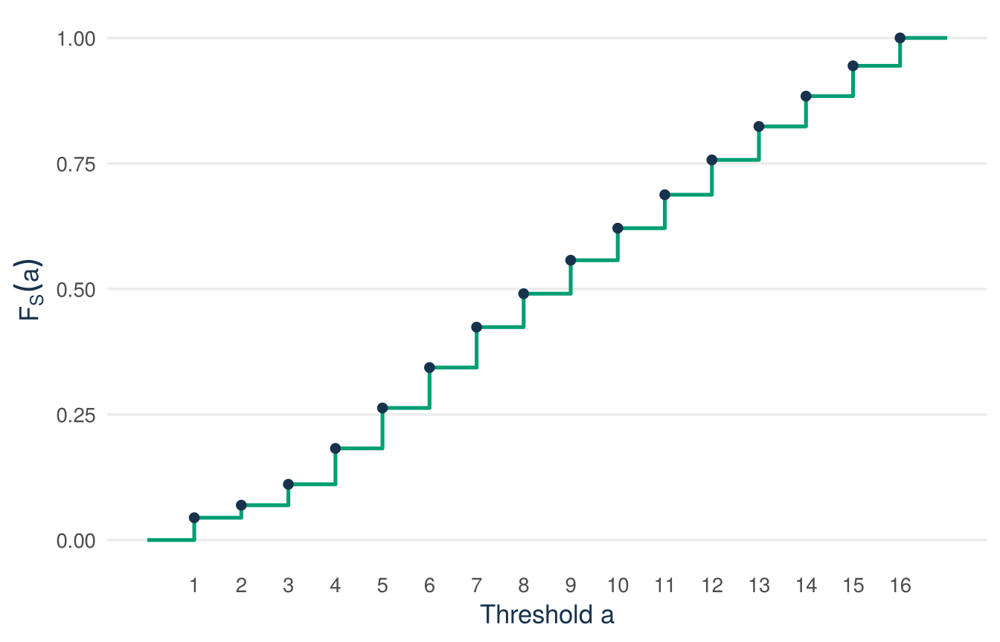
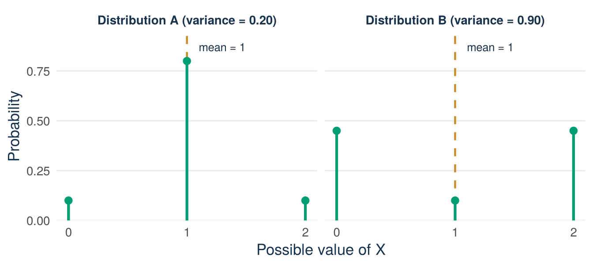

Lecture 3: Discrete distributions, expectation, and variance
By the end of Lecture 3, you can
construct, check, and interpret a probability mass function
construct and interpret a discrete cumulative distribution function
calculate and interpret expectation and the expectation of a function
calculate and interpret variance and standard deviation, including the Bernoulli case \(p(1-p)\)
calculate the expected value, variance, and standard deviation of a shifted and rescaled variable \(aX+b\)
connect model expectation to an empirical mean, and distribution variance to sample variance, without confusing them.
Must know
Be able to do yourself:
check that a table of probabilities is a valid PMF
calculate an expected value, a variance, and a standard deviation from a small PMF
use \(p\) and \(p(1-p)\) for a 0/1 variable
shift and rescale: \(E[aX+b]\), \(\operatorname{Var}(aX+b)\), and \(\operatorname{SD}(aX+b)\).
Enough to recognise:
the notation \(p_X(x)\) and \(F_X(a)\), and the symbols \(\mu\), \(\sigma^2\), and \(\sigma\)
that R’s var() and sd() divide by \(n-1\).
Driving question
Anyone preparing a pitch wants to know what to expect: the typical outcome, and how far reality tends to differ from it. Centre and spread are the two numbers every summary of business risk starts from.
If your pitch ends in a deal, how many sharks will you be dealing with, and how much does that number differ from deal to deal?
Before class
Total preparation time: about 25 minutes.
Minimum path: the video preparation and the prediction. Full path: everything in this section.
Video preparation (15 minutes) Watch Probability Mass Functions and Expectation. Be ready to explain what \(p_X(x)\) measures and why an expected value need not be a possible realised value. All links are also listed in the External Video Guide.
Reactivate (5 minutes). Lecture 2 ended with random variables on the uniform record-selection experiment. Define \(X=1\) if the selected pitch reached an on-air deal and \(X=0\) otherwise. Define \(S\) as its season number.
What are the possible values of \(X\) and of \(S\)?
Do these possible values tell us how likely each value is?
Check your answers
\(X\) can take the values 0 and 1. \(S\) can take the values \(1,2,\ldots,16\).
No. The support lists the possible values. A probability distribution must also assign a probability to each value. This lecture adds that step.
Predict (5 minutes). Answer the one-click Wooclap question posted on Canvas before you come to class: can the expected season be a number that is not a whole season, yes or no? Commit to an answer. You find the answer in the lecture material.
This section starts with a table that a founder can read without any theory. It answers four questions from that table and then gives each step its name.
Start with a founder’s question
Suppose your pitch ends in a deal. Will you work with one investor who gives you full attention, or with a group of sharks who share the deal? The Shark Tank file records the number of sharks in each deal in the variable number_sharks_in_deal. The code below counts the deals by this number:
Of the 882 deals, 648 have one shark, 203 have two, 22 have three, 3 have four, and 6 have five. As shares: 0.735, 0.230, 0.025, 0.003, and 0.007.
Four questions, answered from the shares
How likely is a deal with exactly one shark? Read it off: 73.5%.
How likely is a deal with at most two sharks? Add the first two shares: 73.5% + 23.0% = 96.5%.
How many sharks should you expect? Weigh each number by its share and add: \(1\times0.735+2\times0.230+3\times0.025+4\times0.003+5\times0.007
\approx1.32\). No deal has 1.32 sharks. The section on expectation explains how to read such a number.
How much do deals differ from that number? Not much: most deals have one shark and nearly all others have two. The section on variance gives one number for this spread.
Each of the four steps has a name. The list of shares is a probability mass function. The running total in question 2 is a cumulative distribution function. The weighted average in question 3 is an expected value. The spread in question 4 is measured by the variance and the standard deviation. The sections below take them one at a time.
A random variable identifies the numerical values that may be observed. Its distribution adds the missing information: how probability is divided among those values.
For a discrete random variable \(X\), the probability mass function (PMF) is
\[p_X(x)=P(X=x).\]
Read this notation in parts:
Symbol
Meaning
\(X\)
the random variable
\(x\)
one possible numerical value
\(p_X\)
the PMF belonging to \(X\)
\(p_X(x)\)
the probability that \(X\) equals exactly \(x\)
The probability attached to one value is also called its probability mass, or mass for short. A valid PMF must satisfy
\[
p_X(x)\ge 0\quad\text{for every }x,
\qquad
\sum_{x\in\mathcal X}p_X(x)=1,
\]
where \(\mathcal X\) is the support of \(X\). The first rule prevents negative probability. The second says that one of the possible values must occur.
Example 3.1 (Worked example: the deal-indicator PMF, checked) Under the uniform selection experiment from Lecture 2, the deal indicator \(X\) has support \(\{0,1\}\). The Shark Tank file has 882 deals among 1,441 records, so 559 records have no deal. The PMF is
0: no on-air deal 1: on-air deal
0.3879251 0.6120749
sum(deal_pmf)
[1] 1
For the season \(S\) (season in the Shark Tank file), the PMF under the uniform record-selection experiment gives each season its share of the 1,441 records:
Figure 3.1: The PMF of season under uniform record selection: sixteen separated probability masses, one per possible value.
The probability mass above season 5 in Figure 3.1 has height \(p_S(5)=P(S=5)=116/1441\approx0.080\). A PMF is represented by separated probability masses because \(S\) can take only the listed discrete values. The term probability density function (PDF) is reserved for continuous random variables and is introduced in Lecture 6.
The PMF asks about one exact value. The cumulative distribution function (CDF) asks how much probability has accumulated at or below a chosen threshold. Imagine moving from left to right across the PMF and keeping a running total.
For any random variable \(X\),
\[F_X(a)=P(X\le a).\]
Here \(a\) is a threshold, not necessarily a value in the support. For a discrete random variable,
\[F_X(a)=\sum_{x\le a}p_X(x).\]
Definition
Probability mass function (PMF) and cumulative distribution function (CDF). The PMF, \(p_X(x)=P(X=x)\), gives the probability that \(X\) equals exactly the value \(x\). The CDF, \(F_X(a)=P(X\le a)\), gives the probability that \(X\) is at or below the threshold \(a\).
Example 3.2 (Worked example: F(3) for season, by hand) “\(S\le 3\)” collects the first three seasons, so add the first three probability masses of the PMF. The season counts are 64, 36, and 60:
library(ggplot2)sharks <-read.csv("data/shark_tank_teaching.csv", stringsAsFactors =FALSE)season_pmf <-prop.table(table(sharks$season))cdf_df <-data.frame(threshold =as.numeric(names(season_pmf)),cdf =cumsum(as.numeric(season_pmf)))# For the line only: a flat part at 0 before Season 1 and at 1 after Season 16step_df <-rbind(data.frame(threshold =0, cdf =0), cdf_df,data.frame(threshold =17, cdf =1))ggplot(cdf_df, aes(x = threshold, y = cdf)) +geom_step(data = step_df, linewidth =0.9, colour ="#009E73") +geom_point(size =1.9, colour ="#17324D") +scale_x_continuous(breaks =1:16) +scale_y_continuous(limits =c(0, 1)) +labs(x ="Threshold a", y =expression(F[S](a))) +theme_minimal(base_size =13) +theme(panel.grid.minor =element_blank(),panel.grid.major.x =element_blank(),plot.caption =element_text(colour ="#5B6976"),axis.title =element_text(colour ="#17324D") )

Figure 3.2: The CDF of season: a step graph that never falls. It is 0 to the left of Season 1, jumps at each possible value by that value’s probability mass, and stays at 1 from Season 16 on.
A CDF accumulates probability as the threshold moves from left to right. It can stay flat or rise, but it cannot fall. It equals 0 below the smallest possible value and reaches 1 after all possible values have been included. In Figure 3.2 the line is flat at 0 to the left of Season 1 and flat at 1 to the right of Season 16.
For a discrete variable, the CDF is a step graph. It stays flat between possible values and jumps at each value that has positive probability. A larger jump means that more probability is attached to that value.
Check: read F(8) off the step graph
\(F_S(8)=P(S\le 8)\) is the height of the step graph at threshold 8: the first eight seasons contain \(64+36+60+103+116+116+116+96=707\) records, so \(F_S(8)=707/1441\approx0.491\). Just under half of the probability lies in Seasons 1–8. This agrees with Lecture 2, where the early-period event \(L^c\) had probability \(707/1441\).
The probability of an interval is a difference of two CDF values:
\[P(a<X\le b)=F_X(b)-F_X(a).\]
For example, \(P(3<S\le 8)=F_S(8)-F_S(3)=(707-160)/1441=547/1441\approx0.380\): 38.0% of the probability lies in Seasons 4 to 8.
where \(p=P(X=1)\). So \(p_X(1)=P(X=1)=p\), while \(F_X(1)=P(X\le1)=1\). The PMF measures the mass at exactly 1. The CDF includes all mass up to and including 1.
A distribution can contain many possible values and probabilities. The expected value, or expectation, summarises its centre in one number. Values with larger probabilities receive more weight:
\[E[X]=\sum_{x\in\mathcal X}x\,p_X(x).\]
The notation \(E[X]\) is read “the expected value of \(X\)”. The expected value is also called the mean of \(X\) and written \(\mu\) (the Greek letter mu) or \(\mu_X\). The calculation multiplies each possible value by its probability and adds the products. The result can also be viewed as the balance point of the probability distribution.
Definition
Expected value. The probability-weighted average of the possible values of \(X\), written \(E[X]\), \(\mu\), or \(\mu_X\). If the experiment is repeated many times, the average of the observed values comes close to \(E[X]\).
This long-run reading does not make the expected value a guarantee for a single observation. The weighted average in question 3 of the opening was this calculation: the expected number of sharks in a deal is about 1.32. No single deal has 1.32 sharks, but over many deals the average number of sharks per deal comes close to 1.32.
Before using the Shark Tank data again, try the calculation once on a very small invented distribution.
Example 3.3 (Worked example: expectation of a tiny PMF) Let \(Y\) have support \(\{0,1,2\}\) with masses
Each possible value contributes its value times its probability. The sum, 1.1, is the balance point. Note that 1.1 is not in the support: \(Y\) never equals 1.1.
Now apply the same steps to the Shark Tank distributions. For the deal indicator,
\[E[X]=0\times(1-p)+1\times p=p.\]
This result explains why the mean of a 0/1 variable equals its proportion of 1s. Here \(E[X]=882/1441\approx0.612\).
For the season, the sum has sixteen products instead of two:
The expected season is about 8.8, and there is no Season 8.8. This answers the prediction question from before class: an expectation is a probability-weighted average, so it need not be a possible value of the random variable.
Expectation after transforming a variable
Many quantities are built from a random variable by a fixed rule. Examples for the variable \(Y\) of the worked example are the profit \(10Y-3\) (10 euros per unit of \(Y\) minus a fixed cost of 3 euros) and the square \(Y^2\). Such a function \(g(X)\) of a random variable \(X\) is itself a random variable, with its own possible values and its own distribution.
If \(g\) transforms each possible value of \(X\), the expected transformed value is
\[E[g(X)]=\sum_{x\in\mathcal X}g(x)\,p_X(x).\]
The probabilities do not change. Apply \(g\) to each possible value, weight the transformed values by the original PMF, and add.
Try it: E[Y²] for the tiny PMF
Try this with your neighbour first. Same distribution as the worked example: \(Y\in\{0,1,2\}\) with masses \(0.2,0.5,0.3\), and \(g(y)=y^2\).
Step 1 (given). Square each possible value: \(0^2=0\), \(1^2=1\), \(2^2=4\).
Step 2 (you). Weight each squared value by its original probability and write the three products.
Step 3 (you). Add them to obtain \(E[Y^2]\). Is it equal to \(\left(E[Y]\right)^2=1.1^2\)?
It is not\(\left(E[Y]\right)^2=1.21\). Squaring and then averaging differs from averaging and then squaring. The gap between the two is \(1.7-1.21=0.49\). The section on variance gives this gap a name.
Expectation locates the centre of a distribution, but it does not describe how tightly values cluster around that centre. Two distributions can have the same expectation and very different spreads. Both distributions in Figure 3.3 have expectation 1. Which one is riskier, and why?
See the R code for this figure
library(ggplot2)spread_df <-data.frame(x =rep(0:2, times =2),probability =c(0.10, 0.80, 0.10, # Distribution A0.45, 0.10, 0.45), # Distribution Bdistribution =rep(c("Distribution A (variance = 0.20)","Distribution B (variance = 0.90)"), each =3))ggplot(spread_df, aes(x = x, y = probability)) +geom_vline(xintercept =1, colour ="#C98B2E",linetype ="dashed", linewidth =0.8) +geom_segment(aes(xend = x, yend =0),linewidth =1.1, colour ="#009E73") +geom_point(size =2.6, colour ="#009E73") +annotate("text", x =1.1, y =0.87, label ="mean = 1",hjust =0, colour ="#17324D", size =3.4) +facet_wrap(~ distribution) +scale_x_continuous(breaks =0:2) +scale_y_continuous(limits =c(0, 0.9),expand =expansion(mult =c(0, 0.05))) +labs(x ="Possible value of X", y ="Probability") +theme_minimal(base_size =13) +theme(panel.grid.minor =element_blank(),panel.grid.major.x =element_blank(),plot.caption =element_text(colour ="#5B6976"),axis.title =element_text(colour ="#17324D"),strip.text =element_text(colour ="#17324D", face ="bold") )

Figure 3.3: Two distributions with the same expectation and very different spreads. The dashed line marks the common mean, 1.
The horizontal axis lists the possible values and the vertical axis gives their probabilities. The centre is the same, but Distribution B has greater spread because values 0 and 2 receive much more probability. If these were payoffs, B would be the riskier choice. Variance is the number that measures this difference.
To measure spread, start with the deviation \(X-\mu\), where \(\mu=E[X]\). Positive and negative deviations would cancel if they were averaged directly, so the variance squares each deviation before taking its probability-weighted average:
Variance has squared units. Standard deviation returns to the units of \(X\). If \(X\) is measured in seasons, \(\operatorname{Var}(X)\) is in seasons squared, a unit nobody can picture, while \(\operatorname{SD}(X)\) is back in seasons.
Definition
Variance and standard deviation. The variance, \(\operatorname{Var}(X)\) or \(\sigma^2\), is the probability-weighted average of the squared deviations of \(X\) from its mean \(\mu\). The standard deviation, \(\operatorname{SD}(X)\) or \(\sigma\), is the square root of the variance and has the same units as \(X\).
Example 3.4 (Worked example: variance of the tiny PMF, both ways) Same \(Y\) as before: values \(0,1,2\) with masses \(0.2,0.5,0.3\), and \(\mu=E[Y]=1.1\).
Both routes give 0.49, so \(\operatorname{SD}(Y)=\sqrt{0.49}=0.7\), in the same units as \(Y\).
A variable with only the values 0 and 1, such as the deal indicator, is so common that its distribution has a name.
Definition
Bernoulli distribution. A random variable \(X\) that takes only the values 0 and 1, with \(P(X=1)=p\) and \(P(X=0)=1-p\), has a Bernoulli distribution, written \(X\sim\text{Bernoulli}(p)\). Its expected value is \(p\) and its variance is \(p(1-p)\).
The symbol \(\sim\) is read “is distributed as”. The expected value \(p\) was found in the section on expectation. The variance follows from the computational form. Since \(X^2=X\) when \(X\) is 0 or 1, \(E[X^2]=E[X]=p\), so
\[
\operatorname{Var}(X)=p-p^2=p(1-p).
\]
The deal indicator is a Bernoulli variable with \(p=882/1441\approx0.612\). Its variance is \(0.612\times0.388\approx0.237\) and its standard deviation is about 0.49.
The season has a variance of about 18.1 seasons squared and a standard deviation of about 4.3 seasons. The typical distance between the season of a randomly selected pitch and the expected season 8.8 is roughly four seasons, a quarter of the 16 seasons. The standard deviation is somewhat larger than the plain average distance (about 3.7 seasons here), because squaring gives large deviations more weight.
The opening question asked how much deals differ in their number of sharks. The same two steps answer it:
The expected number of sharks is 1.32 and the standard deviation is about 0.61 sharks, which is less than one shark. Deals differ little in this respect.
Shifting and rescaling a variable
Business quantities are often built from other quantities: revenue is price times units, profit is revenue minus a fixed cost. For constants \(a\) and \(b\),
Adding a constant \(b\) moves the centre and leaves the spread unchanged. Multiplying by \(a\) multiplies the centre by \(a\) and the standard deviation by \(|a|\), the size of \(a\) without its sign. The variance is therefore multiplied by \(a^2\).
An example with the tiny PMF: \(Y\) has \(E[Y]=1.1\), \(\operatorname{Var}(Y)=0.49\), and \(\operatorname{SD}(Y)=0.7\). If each unit of \(Y\) earns 10 euros and there is a fixed cost of 3 euros, the profit is \(10Y-3\). Its expectation is \(10\times1.1-3=8\) euros. Its variance is \(10^2\times0.49=49\) euros squared, and its standard deviation is \(10\times0.7=7\) euros.
Standardising in Lecture 6 is this rule at work. Subtract the mean \(\mu\) from \(X\) and divide by the standard deviation \(\sigma\). The result \((X-\mu)/\sigma\) then has mean 0 and standard deviation 1. Lecture 8 uses the same rules to find the spread of a sample mean.
Model expectation and the sample mean
For observed values \(x_1,\ldots,x_n\), the sample mean is
\[\bar{x}=\frac{1}{n}\sum_{i=1}^n x_i.\]
Now give every observed row the same probability, \(1/n\). This distribution is called the empirical distribution of the data. Its expectation is
\[\sum_{i=1}^n x_i\,\frac{1}{n}=\bar{x}.\]
The two numbers agree, but the terms name different objects. Expectation describes a probability distribution. The sample mean summarises observed data.
The same split exists for spread. The variance of the empirical distribution weights each of the \(n\) observations by \(1/n\), so it divides by \(n\). The usual sample variance divides by \(n-1\):
Its square root \(s\) is the sample standard deviation. R’s var() and sd() divide by \(n-1\). Lecture 7 explains why \(n-1\) is used when a population variance is estimated. For now, only recognise which of the two versions a number uses. The code below computes both for the number of words in the written description (description_words) in the Shark Tank file:
Both centre calculations give about 5.0 words for these 1,441 records. The two variances, 3.647 and 3.649, differ only in the third decimal because \(n\) is large. All these numbers summarise the same observations. To use one of them as an estimate for a wider population, you also need to know how the sample was drawn. Lecture 7 covers this.
What an expected value can and cannot promise
An expected value is not a promise for one case. No deal has 1.32 sharks, and no pitch gets “0.612 of a deal”.
Single outcomes can lie far from the expected value. The standard deviation says how far, typically.
All numbers here describe the recorded pitches. For future pitches they are forecasts that rest on the assumptions of Lecture 2.
What you can do with it: plan with the expected value when a decision repeats many times, and look at the spread when one bad outcome would hurt.
Answering the driving question
If your pitch ends in a deal, expect to deal with one shark. 73.5% of deals have exactly one shark and 96.5% have at most two. The expected number is 1.32, with a standard deviation of about 0.61. The same two numbers, centre and spread, describe the other variables of this lecture. The deal indicator is a Bernoulli variable: a recorded pitch reaches an on-air deal with probability 0.612, and the variance is about 0.24. The season has expected value \(E[S]\approx8.8\) and a standard deviation of about 4.3 seasons. Centre and spread together describe a distribution. One of them alone can mislead.
A founder’s decision (invented example)
Tomorrow you sell 20 boxes with probability 0.2, 30 with probability 0.5, and 40 with probability 0.3. The expected value is 31 boxes and the standard deviation is 7. An unsold box costs you 3 euros of ingredients. A customer you cannot serve costs you 5 euros of margin. Compare the expected cost of three plans: preparing 20 boxes costs 55 euros a day on average, preparing 30 costs 21 euros, and preparing 40 costs 27 euros. The decision: prepare 30. The expected value told you where to aim. The spread and the two costs told you what a wrong guess is worth.
Next: We can now say what a typical pitch looks like and how much pitches vary around it. But those are answers about a pitch we know nothing about. In practice we always know something: its season, its industry, a flag from a screening model. Lecture 4 asks how probabilities change when information arrives. It covers conditional probability, the total-probability rule that rebuilds an overall rate from group rates, Bayes’ rule for reversing the direction of a question, and independence, the case in which information changes nothing.
After class
Total practice time: about 85 minutes.
Minimum path (about 35 minutes): read the lecture material, answer the recall questions, then work for 10 minutes on the tasks that follow. Full path: all tasks below.
Read the lecture material (15 minutes)
Read the Lecture material section above from start to end. The lecture covered the core of it. The text has every step, every example, and all the code, including parts that were not shown in class. Note what is still unclear and bring it to the next tutorial, or ask Tilly.
Recall questions (10 minutes)
What information does a PMF add to the support of a random variable?
What two requirements must every PMF satisfy?
What is the difference between \(p_X(x)\) and \(F_X(x)\)?
Why can an expectation be a value the random variable never takes?
What does variance average, and why are deviations squared first?
Why do variance and standard deviation have different units, and which one is easier to interpret?
Check your answers
The support lists possible values. The PMF assigns probability to each value.
Every probability mass is non-negative, and the masses sum to 1.
\(p_X(x)=P(X=x)\) is the mass at exactly \(x\). \(F_X(x)=P(X\le x)\) is all probability accumulated up to and including \(x\).
Expectation is a probability-weighted average and need not belong to the support.
Variance averages squared deviations from the distribution mean. The probability-weighted raw deviations sum to zero, so squaring stops positive and negative deviations from cancelling.
Variance is in squared units of \(X\). The standard deviation is its square root and returns to the units of \(X\), which makes it the easier summary to interpret.
Finish a half-worked example (10 minutes)
Re-read the two tiny-PMF worked examples (Example 3.3 and Example 3.4). Then do all the steps on a new invented distribution. Let \(W\) have support \(\{0,1,2\}\) with masses \(0.3\), \(0.4\), and \(0.3\).
Step 1 (given). Validity: all masses are non-negative and \(0.3+0.4+0.3=1\).
Step 2 (you). Calculate \(F_W(1)\).
Step 3 (you). Calculate \(E[W]\), writing each product.
Step 4 (you). Calculate \(E[W^2]\), then \(\operatorname{Var}(W)\) with the computational form, then \(\operatorname{SD}(W)\).
Check your answer
\(F_W(1)=P(W\le1)=0.3+0.4=0.7\). \(E[W]=0(0.3)+1(0.4)+2(0.3)=1.0\). \(E[W^2]=0(0.3)+1(0.4)+4(0.3)=1.6\), so \(\operatorname{Var}(W)=1.6-1.0^2=0.6\) and \(\operatorname{SD}(W)=\sqrt{0.6}\approx0.77\). Compare \(W\) with the variable \(Y\) of the worked examples. Both take the values 0, 1, and 2, but \(W\) has the larger variance (\(0.6>0.49\)), because more of its probability sits at the two ends, 0 and 2.
Practice (15 minutes)
Tasks 1 to 5 use the Shark Tank distributions of the lecture material. Task 6 uses an invented example.
For the deal indicator with \(p=882/1441\), calculate \(F_X(0.4)\).
Use the season CDF table to calculate \(P(3<S\le6)\).
A Bernoulli variable has \(p=0.25\). Calculate its variance and standard deviation.
The standard deviation of season is about 4.3. Write one sentence interpreting this number, naming its units.
Why is \(\operatorname{Var}(S)\approx18.1\) harder to interpret than \(\operatorname{SD}(S)\approx4.3\)?
An invented example. A founder sells phone cases at a weekend market. The number of cases sold on one day, \(X\), has \(E[X]=12\) and \(\operatorname{SD}(X)=4\). Each case brings in 15 euros and the stall costs 60 euros per day, so the profit of one day is \(15X-60\) euros. Calculate the expected value, the variance, and the standard deviation of the profit.
Check your answers
Because \(0\le0.4<1\), \(F_X(0.4)=P(X=0)=559/1441\approx0.388\).
The season of a randomly selected pitch typically differs from the expected season (about 8.8) by roughly 4.3 seasons.
Variance is measured in seasons squared, a unit without a direct picture. The standard deviation is back in seasons.
Use the rules for \(aX+b\) with \(a=15\) and \(b=-60\). The expected profit is \(15\times12-60=120\) euros. \(\operatorname{Var}(X)=4^2=16\), so the variance of the profit is \(15^2\times16=3600\) euros squared. The standard deviation of the profit is \(15\times4=60\) euros, half of the expected profit. The stall cost of 60 euros lowers the expected profit and leaves the spread unchanged.
Review: one question from Lecture 2 (5 minutes)
Using the Lecture 2 counts table (\(|D^c|=559\), \(|L|=734\), \(|D^c\cap L|=229\), \(n=1441\)), calculate \(P(D^c\cup L)\) and interpret it in one sentence.
Check your answer
\(P(D^c\cup L)=(559+734-229)/1441=1064/1441\approx0.738\): about 74% of the recorded pitches failed to reach an on-air deal, came from Seasons 9–16, or both. The overlap (229 late-season no-deal records) is subtracted once so no record is counted twice.
Worked exam interpretation (10 minutes)
Question. R reports mean(deal_on_show) = 0.612. Explain this number as both a sample mean and the expectation of the empirical distribution.
Check a model answer
Because the indicator equals 1 for an on-air agreement, its sample mean is the observed deal proportion: 61.2% of the 1,441 records. If the empirical distribution assigns mass \(1/1441\) to each record, its expectation is the same weighted average, 0.612. This does not show later venture success or guarantee the probability for a future pitch.
Exam practice: from a PMF to the standard deviation (10 minutes)
Question. An invented example. A venture sells one product per customer at three price points. Let \(V\) be the price paid by a randomly selected customer, in euros, with PMF \(p_V(10)=0.5\), \(p_V(20)=0.3\), \(p_V(40)=0.2\). (a) Verify that this is a valid PMF. (b) Calculate \(F_V(20)\). (c) Calculate \(E[V]\) and \(E[V^2]\). (d) Calculate \(\operatorname{Var}(V)\) and \(\operatorname{SD}(V)\), stating the units of each.
Check a model answer
All masses are non-negative and \(0.5+0.3+0.2=1\).
\(\operatorname{Var}(V)=490-19^2=490-361=129\) euros squared. \(\operatorname{SD}(V)=\sqrt{129}\approx11.4\) euros. The expected revenue per customer is 19 euros. The typical deviation from it is about 11 euros, more than half of the expected value.
Check the AI (5 minutes)
You asked an AI assistant: “How many sharks will I deal with if I get a deal?” It answered:
“The expected number of sharks is 1.32. The expected value is the most likely value, so in most deals you negotiate with 1.32 sharks.”
Find what is wrong and write the corrected answer. This is the Verify step of Attempt → Ask → Verify → Explain, and the exam asks for it.
Check your answer
No deal has 1.32 sharks. The expected value is a weighted average, not the most likely value. The most likely number is one shark: 73.5% of deals have exactly one. The 1.32 is still useful, for example to plan with many deals, but it describes the centre of the distribution, not a single deal.
Make it yours (5 minutes)
Utility: two sentences
Think of your EiA venture, or any business you know well. Pick one uncertain quantity with a handful of possible values (units sold next week, price a customer picks, orders per day) and write two sentences: first sketch its rough PMF and expected value, then say whether the centre or the spread matters more for a real decision you would take, and why. There is no wrong answer.
See an example, then write your own
Take a student-run campus meal-prep box venture. “Daily orders next week are roughly 20 with probability 0.2, 30 with probability 0.5, and 40 with probability 0.3, so the expected value is about 31. The spread matters more than the centre for me, because I prep ingredients in advance: a 40-order day with 20-order stock hurts more than an average day helps.”
You can discuss this task, and any other task in this chapter, with Tilly, the course AI assistant: ask it to check whether your sketched PMF is valid and to compute its standard deviation with you.